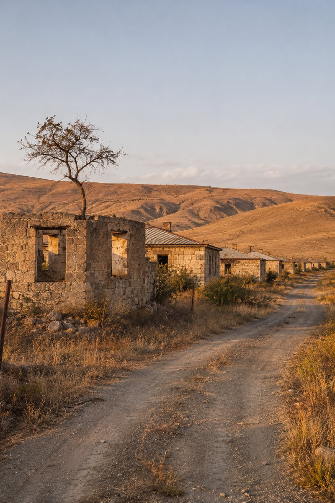

Эпилог. Сентябрь

Воскресенье, 12 сентября — среда, 15 сентября 2027 года
В Удабно Хатия въехала в воскресенье, под вечер, и уже у первых домов сообразила, что прошёл ровно год.
Год назад, тоже двенадцатого, её вёз сюда Джансуг. Она сидела рядом с ним, держала ноги на своих сумках и думала, что до июня как-нибудь дотянет. Теперь за рулём была она сама. «Нива» была та же, Ламзирина, только грязная до самой крыши. На капоте засохла глина с перевала. На заднем стекле кто-то из туристов в Омало написал пальцем по пыли «wash me». Хатия не стирала. Ей казалось, что это честно.
Перед селом она остановилась на последнем бугре, там, где дорога переваливает и Удабно открывается всё сразу. Дома с людьми и дома без людей. Школа. Церковь. Дерево в доме Кирилэ. Кладбище на склоне, на самом ветру. Отсюда было видно каждый двор, и любой, кто стоял во дворе, мог увидеть её.
«Всё видно, и спрятаться некуда», — сказала ей Ламзира зимой. Хатия тогда думала, что это про страх. Сейчас она посидела в машине с открытым окном и подумала, что прятаться, в общем, незачем. Потом поехала вниз.
⁂
Лето она прожила наверху.
Собиралась на неделю, потом на две. Потом Бачо привёз из Омало вторую палатку и молча поставил рядом с Тамтиной. Хатия поняла, что это ответ на вопрос, который она не задавала. Больше она про «неделю» не говорила.
Она научилась различать, как свистит Бачо. Один свист значил «заворачивай», другой «стой», третий, длинный, «иди есть». Научилась спать на земле и не просыпаться от каждой овцы. Научилась не спрашивать Темура, куда он идёт. Темур всё равно приходил обратно, иногда с хворостом, иногда с грибами, один раз с чужим ягнёнком, отбившимся от соседской отары. Ягнёнка потом полдня возвращали.
Новых слов Мзаго ей больше не давала.
— Пять хватит, — сказала она. — Остальные потом. Когда заслужишь.
Зато сама учила знаки каждый вечер. Уже не под миской с фасолью, а открыто, за столом, при всех. Путала, сердилась на свои пальцы и начинала снова. Маико поправляла её терпеливо, как поправляют младших. Тамта смеялась над ними обеими, а потом сама путала «завтра» с мухой.
Маико спала. Каждую ночь, от темноты до света. Хатия проверяла первые две недели, просыпалась и смотрела на соседнюю палатку. Потом перестала.
В августе Ия написала одно слово: «Вышло». И ссылку.
Хатия читала это у стены большого гостевого дома в Омало, где ловило. Статья была длинная, на сайте, который она раньше никогда не открывала. Фонд, договор аренды, отчёты о «семье пастухов из Ахметского района», подпись, которую подделали. В середине был кусок записи, сорок секунд. Голос Малхаза Чантладзе говорил «можно» спокойно, как говорят официанту. Хатия прослушала один раз и больше не стала.
Про девочку в статье не было ни слова. Ни имени, ни села, ни кошары. Журналистка сдержала то, что обещала Ие. А Ия сдержала то, чего не обещала никому.
Потом было то, что бывает. Адвокаты Малхаза сказали, что запись смонтирована. Сам он ничего не сказал. Через неделю Ия переслала ей короткую новость: какой-то партнёр в Поти тихо расторг с ним договор. Ещё через неделю — что следствие идёт. Хатия дальше не следила.
Сидеть он не будет. Это Рамаз сказал ещё в июне, и Хатия ему верила. Рамаз знал, как всё устроено, лучше, чем кто-нибудь. Но теперь каждый, кто будет садиться с Малхазом за один стол, сначала прочитает статью. Хатия подумала, что для человека, которому всю жизнь нужно было знать раньше других, это не так уж мало.
⁂
Вниз она поехала одна, в пятницу.
Бачо обошёл «ниву» два раза, осматривая её, как осматривал когда-то сапоги на телавском рынке. Попинал колёса. Лёг на землю и долго смотрел снизу. Встал, отряхнул колени и сказал:
— Доедет.
Мзаго положила в багажник круг сыра, завёрнутый в полотенце. Тамта обняла её так крепко, что у Хатии хрустнуло плечо. Темур ничего не сказал. Он принёс канистру бензина, поставил рядом с сыром и ушёл к отаре. «Для Темура, — подумала Хатия, — это было примерно как речь на свадьбе».
Маико стояла у машины со щенком. Щенок за лето вытянулся, стал почти как мать, но смотрел всё так же, сбоку, куда-то вперёд. Маико показала Хатии три знака: «октябрь — вниз — школа». Потом четвёртый, тот, что придумала для неё ещё зимой. Как будто пишут мелом по доске.
На перевале Хатия дважды сдавала назад, пропуская джипы. А один раз джип сдал назад для неё. Это показалось ей таким достижением, что она полдороги улыбалась. Телефон на перевале показывал «Нет сети». Она не стала его доставать.
Две ночи она провела в Дуиси, у отца.
Отец вышел к воротам, седой, в старой кожаной куртке, хотя было тепло. Обошёл «ниву». Хатия чуть не засмеялась, потому что он обходил её точно так же, как Бачо.
— Через Абано? — спросил он. — Сама?
— Сама.
Отец помолчал.
— Я в твои годы там чуть не умер, — сказал он.
— Знаю. Ты рассказывал.
— Ну так я и говорю, — сказал отец и засмеялся.
Мальчики, её братья, оказались выше её. Голоса у них ломались, и оба стеснялись этого. Весь ужин они спрашивали про тушинских собак. Правда ли, что нагази может задавить волка. Правда ли, что собаки сами гонят отару. Хатия рассказала про щенка, который смотрит туда, где ещё ничего не было. Старший сказал, что так не бывает. Младший сказал, что бывает, и они поругались. Отцовская жена молча подкладывала ей хинкали и смотрела на неё внимательно, но без злости. Для первого раза это было много.
Утром отец вынес пакет.
— Хозяйке твоей, — сказал он. — Лепёшки с тыквой. Чтобы знала, что у нас тоже готовят.
— Она сванка, — сказала Хатия. — Она скажет, что тыквы пожалели.
— Пусть скажет, — сказал отец. — Главное, чтобы съела.
⁂
Ламзира сидела на ступеньках, а рядом с ней сидела Бебия. Обе смотрели, как «нива» въезжает во двор. Взгляд у них был одинаковый.
Хатия заглушила мотор, вылезла и встала у машины. Ламзира поднялась, подошла и долго смотрела. На глину на капоте, на надпись на заднем стекле, на канистру в багажнике. Потом на Хатию, с головы до сапог.
— Живая, — сказала Ламзира.
Хатия так и не поняла, про машину это или про неё.
Она протянула ключи. Ламзира взяла их, ушла в дом и повесила на гвоздь у двери, рядом с ключами от сарая. Потом вернулась.
— Висят там, — сказала она. — Понадобятся — бери. Не спрашивай.
— Ламзира…
— Я сказала, не спрашивай. Что в пакете?
Хатия отдала пакет. Ламзира развернула, понюхала, отломила край лепёшки и прожевала с лицом человека, который проверяет чужую работу.
— Тыквы пожалели, — сказала она.
И взяла второй кусок.
Ночью, уже в комнате с оленями, Хатии пришло сообщение от Рамаза. Первое с конца июня.
«Табличку у лифта сняли в пятницу. Внучка говорит, у меня ошибки в past simple. Учусь».
Хатия долго смотрела на экран. Потом написала: «Хорошо». И уснула раньше, чем успела подумать, что именно хорошо.
⁂
В среду, пятнадцатого, она сняла ключи с гвоздя в семь утра.
Ламзира стояла у плиты спиной и не обернулась. Только сказала:
— Хлеб в машине. Для детей. Сами не съешьте.
Детей было двое. Про них Хатии написала в августе учительница из группы «Сельские учителя Грузии». Та самая группа, где зимой все спорили про пенсии. Учительница работала в селе у трассы, ближе к Сагареджо. У неё во дворе жил глухой мальчик восьми лет, которого никуда не брали. В интернат мать отдавать не хотела, а в обычной школе ему говорили, что он «не тянет». Через неделю Нестан нашла вторую, девочку, через двоюродную сестру. Девочке было шесть. Дома её звали молчуньей и думали, что она поздно заговорит.
— Ты мне в марте сказала, что таких никто не хочет учить, — сказала Нестан по телефону. — Вот, двое. Учи.
— Как я их буду возить?
— Это не мой вопрос, — сказала Нестан. — У меня сорок лет такие вопросы. Решишь.
Как оказалось, этот вопрос решила Ламзира, когда повесила ключи на гвоздь.
Мальчик с матерью ждали у бетонной остановки на развилке. Девочка подошла чуть позже, с бабушкой, маленькая, в новой форме, которая была ей велика. Бабушка держала её за руку так, будто девочку могли унести ветром. Хатия показала им обоим «здравствуй». Мальчик смотрел на её руки с подозрением. Девочка спряталась за бабушку.
Так же когда-то стояла Маико. Хатия подумала об этом и сама удивилась, что думает спокойно.
Сорок минут до Удабно они ехали молча. За рулём говорить знаками было нельзя. Хатия придумала это правило сама и сразу нарушила его на первом прямом участке. Показала «смотри» и кивнула на холмы, где паслись чьи-то коровы. Мальчик посмотрел на коров. Потом на её руки. Потом снова на коров. Девочка на заднем сиденье ела хлеб Ламзиры и крошила на пол. «Ламзира простит», — подумала Хатия.
⁂
В классе было девять своих и двое новых.
Свои за лето выросли и загорели. Цотне сломал руку, упав с абрикоса, и теперь показывал гипс всем по очереди. Тазо выучил за лето все буквы, о чём сообщил с порога. А Гванца подошла к новой девочке, посмотрела на неё строго и показала знак «нельзя». На всякий случай. Девочка не поняла, что нельзя, но повторила.
— Гванца, — сказала Хатия. — Что ты ей запрещаешь?
— Пока ничего, калбатоно Хатия. Это чтобы она знала.
Цотне в это время показывал мальчику знак «лошадь». Одной рукой, потому что вторая была в гипсе. Неправильно, как в марте. Мальчик повторил неправильно, и оба остались довольны. Хатия открыла рот, чтобы поправить. Потом закрыла. Поправить можно и завтра.
Нестан стояла в дверях. Хатия видела её боком, краем глаза. Нестан смотрела на класс так, как смотрят на грядку, где взошло то, чего не сажали.
— Ну вот, — сказала она тихо, ни к кому. И ушла к себе.
На большой перемене у Хатии в кармане зажужжал телефон. Во дворе ловило лучше, чем в классе, и пока шёл урок, видео успело догрузиться. От Тамты. Шесть минут.
Хатия вышла на крыльцо. Новенькие пошли за ней. Они весь день ходили за ней, как утята, и она не знала, радоваться этому или беспокоиться.
На экране была каменная стена, а у стены Маико. Сзади, за её плечом, торчали две башни на холме. Снимала Тамта, это было понятно по большому пальцу в углу кадра.
«Хатия — здравствуй», — показала Маико. Её знак, мелом по доске.
Потом стала рассказывать. «Бабушка — знаки — много». И повернулась, и камера тоже повернулась, и в кадр попала Мзаго. Мзаго сидела на лавке и показывала в камеру «хорошо». Неправильно, с лишним пальцем. Маико подошла, поправила ей палец и вернулась к стене с видом человека, у которого много работы.
«Щенок — сам — овцы». Щенок сам гоняет овец. «Холодно — скоро — снег». «Октябрь — вниз — школа».
Потом Маико остановилась и посмотрела в камеру. Прямо, как смотрят глаза в глаза.
«Новые — двое?»
Хатия писала Тамте про детей ещё в августе. Тамта, видно, рассказала.
Хатия присела на ступеньку, и новенькие тоже присели, по бокам, чтобы видеть экран. Мальчик смотрел, не мигая. Он, наверное, впервые в жизни видел, как другой ребёнок говорит руками. Не взрослый, не учительница, а такой же, как он. В вязаной шапке, с косичкой, на фоне чужих гор.
Маико медленно показала «привет». Два раза, широко, как показывают маленьким.
Девочка подняла руку и показала экрану «привет». Сама, никто ей не говорил. Неуклюже, всей ладонью. Мальчик посмотрел на неё, потом на экран. Потом тоже поднял руку.
Хатия сидела между ними и не могла сказать ни слова. Ни голосом, ни руками. Ей и не надо было.
В конце Маико показала ещё один знак. Свой, с похорон. Ладонь от груди вверх, медленно, раскрываясь. Видео кончилось.
Новенькие смотрели на чёрный экран. Потом девочка повторила и этот знак. Ладонь от груди вверх. Она не знала, что он значит. Хатия тоже знала не до конца. Объяснять она не стала.
Имена им даст Маико. В октябре, когда спустится. Знаковые, свои. Хатия так не умела, а Маико умела лучше всех.
⁂
Вечером, после того как она отвезла детей к развилке, Хатия сидела на кухне у Ламзиры. У того самого окна, где ловило через раз.
Ламзира стояла у плиты. Бебия сидела на табуретке и смотрела на Хатию так, будто ждала доклада.
— Ну? — сказала Ламзира.
Хатия рассказала. Про остановку и бабушку, которая держала внучку от ветра. Про Гванцу и её «нельзя». Про Цотне с гипсом. Про видео, «привет» и про то, как девочка подняла руку.
Ламзира слушала и ни о чём не спрашивала. Хатия только потом поняла, что за год это был первый раз. Год назад, за этим же столом, Ламзира начала с допроса. Теперь не задала ни одного вопроса.
Позвонила мама. Хатия ответила, не вставая от окна.
— Ну что, — сказала мама. — Опять до июня?
Хатия посмотрела на Ламзиру, на кошку, на ключи на гвозде.
— Не знаю, мам.
Мама помолчала.
— Ну-ну, — сказала она.
Год назад это «ну-ну» было про тушин и значило «посмотрим». Сейчас оно прозвучало по-другому. Хатия не стала разбираться как. Сказала маме, что позвонит в воскресенье, и правда собиралась позвонить.
Бебия решила, что доклад окончен, спрыгнула с табуретки и забралась к Хатии на колени. Тяжёлая, тёплая, со своим рваным ухом.
Ламзира сняла чайник с огня. Достала из шкафа два стакана и поставила их в подстаканники Бесо, с Кремлём и спутником. Налила. Поставила один перед Хатией, другой перед собой и села напротив.
— Пей, — сказала Ламзира. — Остынет.